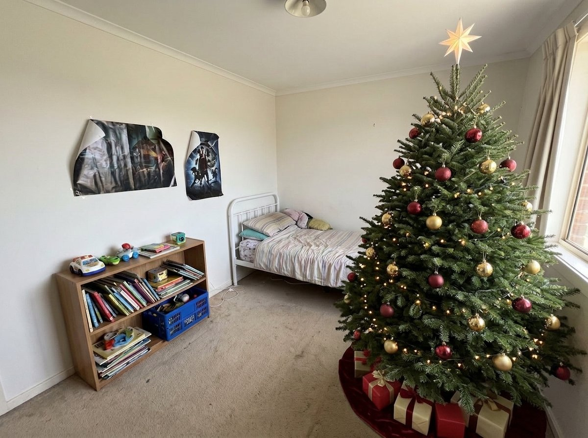
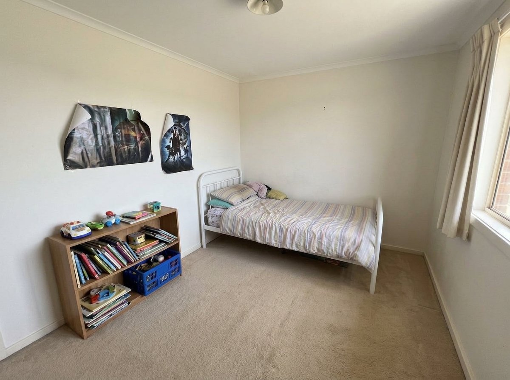
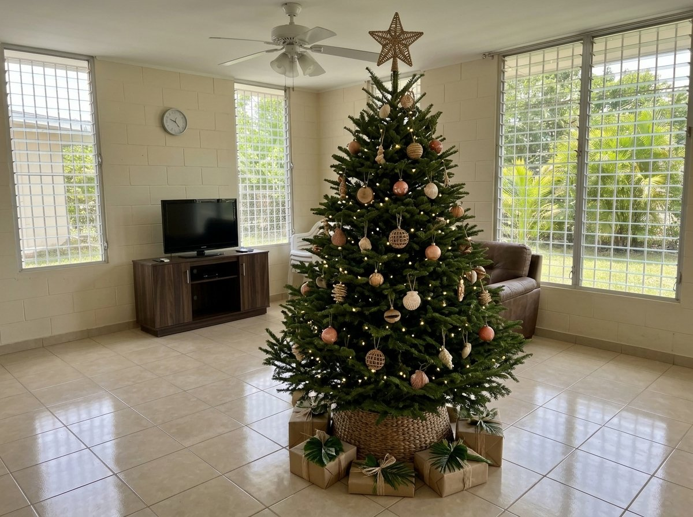
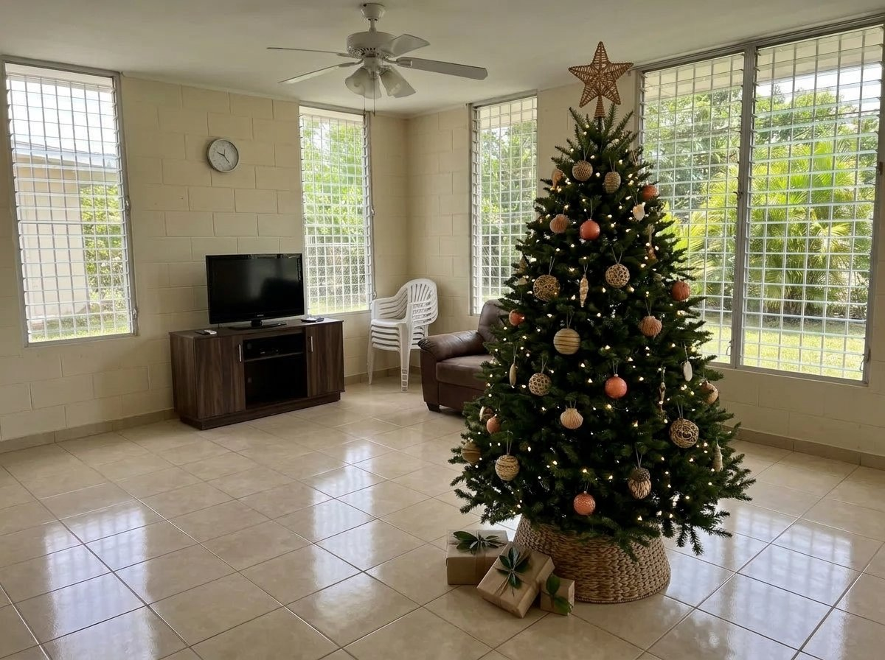
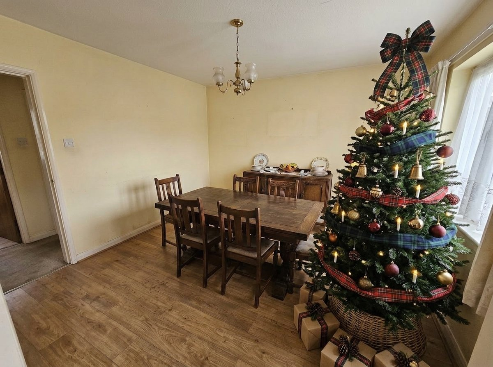
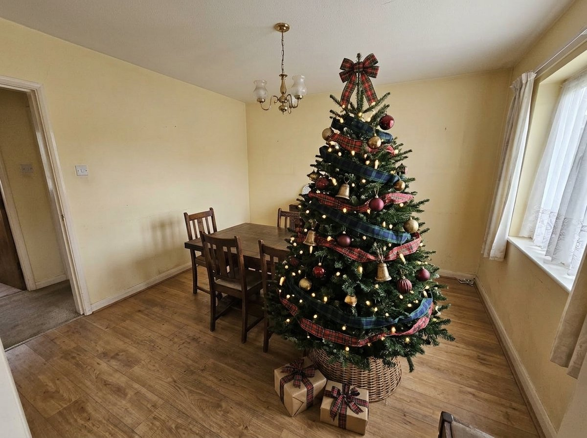

Christmas "Take out furniture": old against new removal rule
xremove-kids-desk
Remove the desk, KEEP the chair that touches it.
 marked
marked
old rule (release/1.0.9): FAIL Desk gone, tree on the spot, but the unmarked chair went too.
new rule (this branch): FAIL Desk gone, chair gone too, and no tree at all: the worst result of the six.xremove-sala-loveseat
Remove the front loveseat, KEEP the sofa behind it.
 marked
marked
old rule (release/1.0.9): PASS Loveseat gone, back sofa and stacked chairs kept (mostly behind the tree).
new rule (this branch): PASS Loveseat gone, back sofa and stacked chairs kept. Smaller tree.xremove-dining-chair
Remove the right-hand chair, KEEP the table and the other five chairs.
 marked
marked
old rule (release/1.0.9): PASS Marked chair gone, table and the other chairs kept, doorway open.
new rule (this branch): PASS Marked chair gone, table and the other chairs kept, doorway open.